December 31, 1985
Earliest timeline tileEarly black-and-white / low-res frame — coarsest look at this spot.
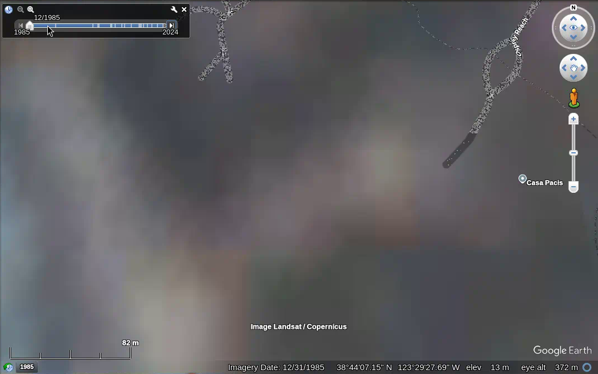
Vertical Google Earth Pro historical imagery of 105 Osprey Reach, The Sea Ranch, CA 95497. The house sits inland on the coastal terrace — near the bluff and beach, not on the sand. Framing includes the house, bluff edge, beach, and access paths.
Loops all 15 frames (1985 → 2024) in the same crop so the house, bluff edge, beach, and access paths line up. Watch how the lot and shoreline read year to year.
Not a survey — a plain-language look at these frames only.
A private house lot on the coastal terrace, set back from the bluff — these tiles are useful for comparing the house footprint, paths, and beach/bluff edge over time, not for hazard conclusions.
Desk read of Google Earth Pro historical tiles only — not geologic, survey, or insurance advice. Tide, season, vegetation, and imagery source can change appearance without a real ground change.
Early black-and-white / low-res frame — coarsest look at this spot.

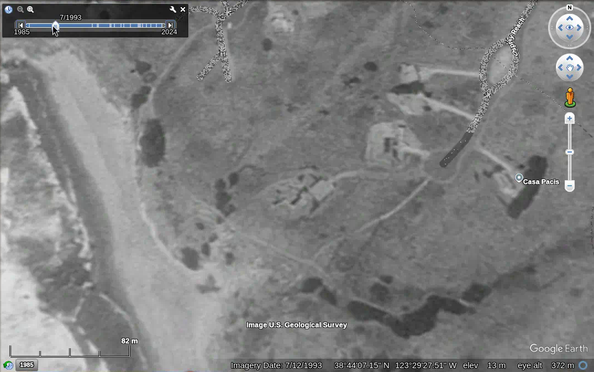
House footprint readable; bluff edge and beach in frame.
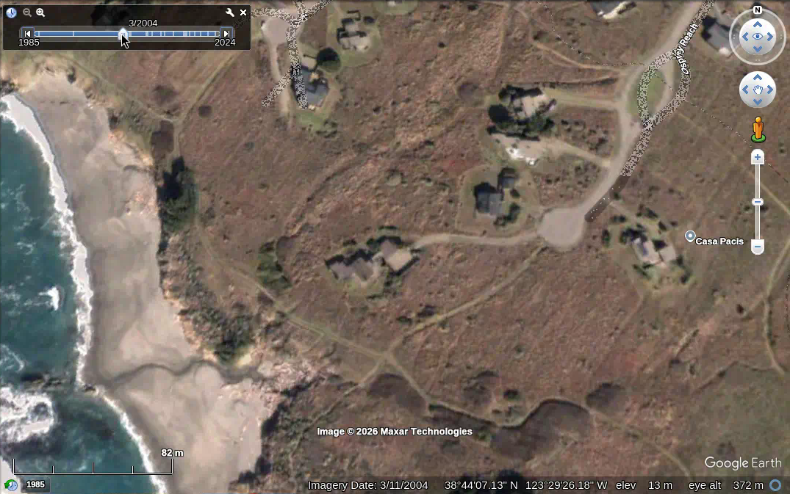
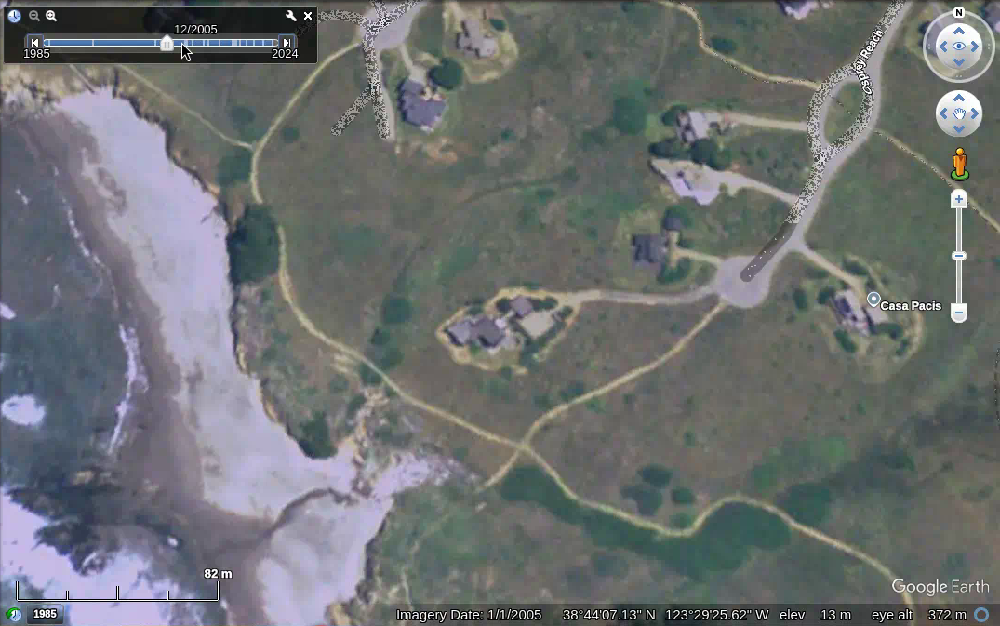
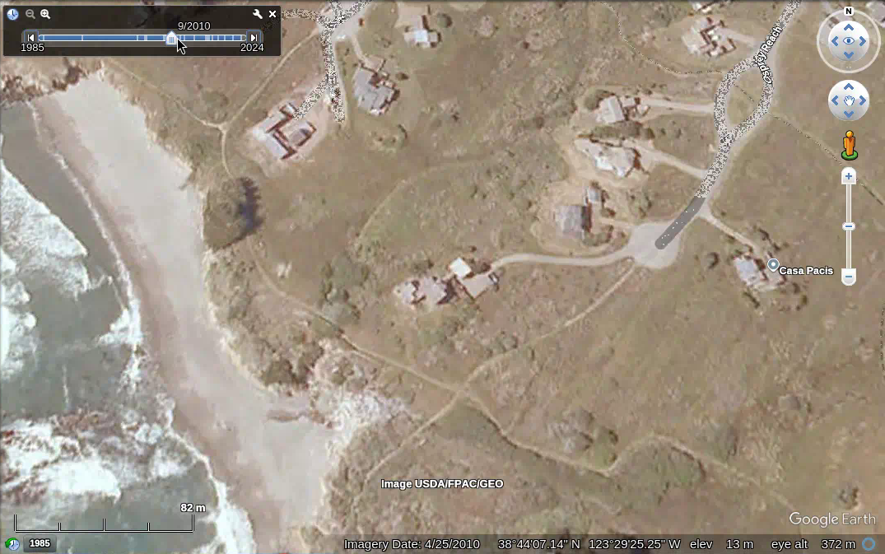
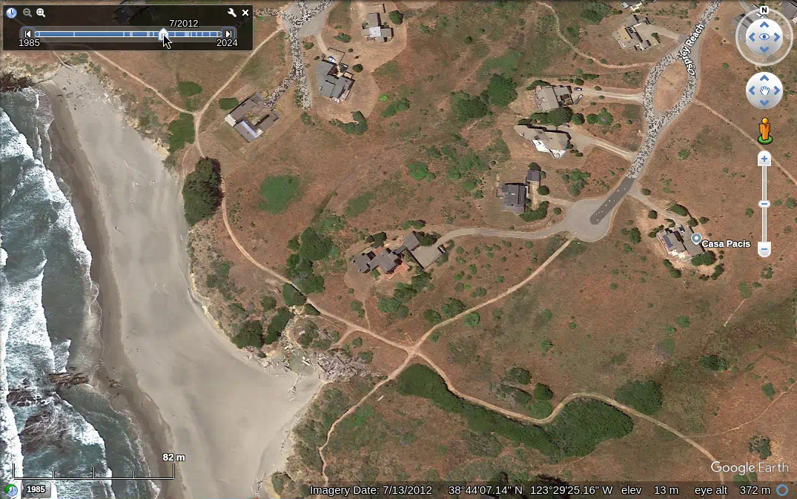
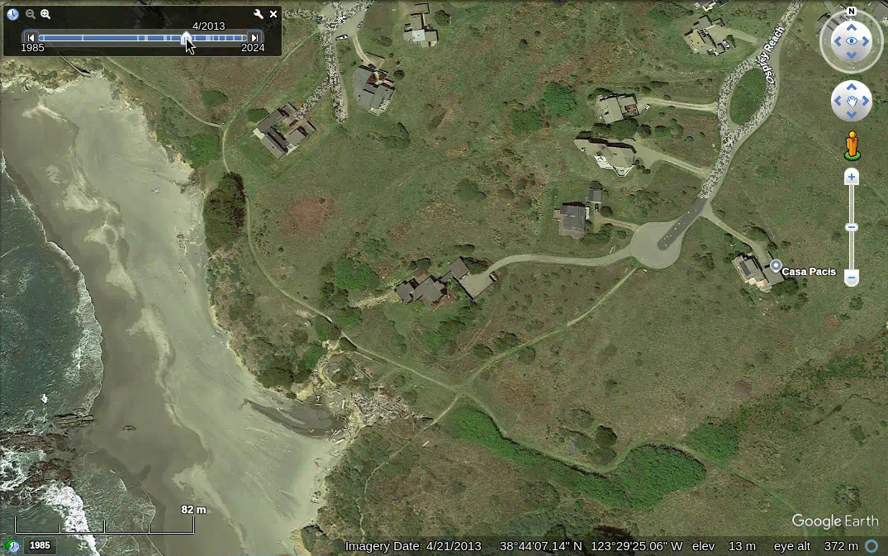
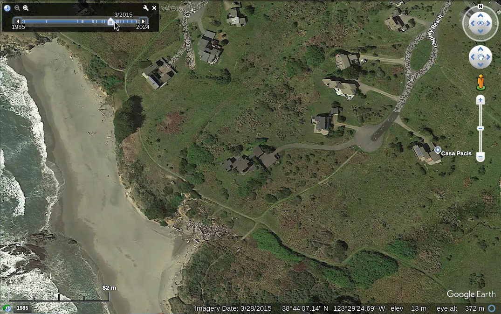
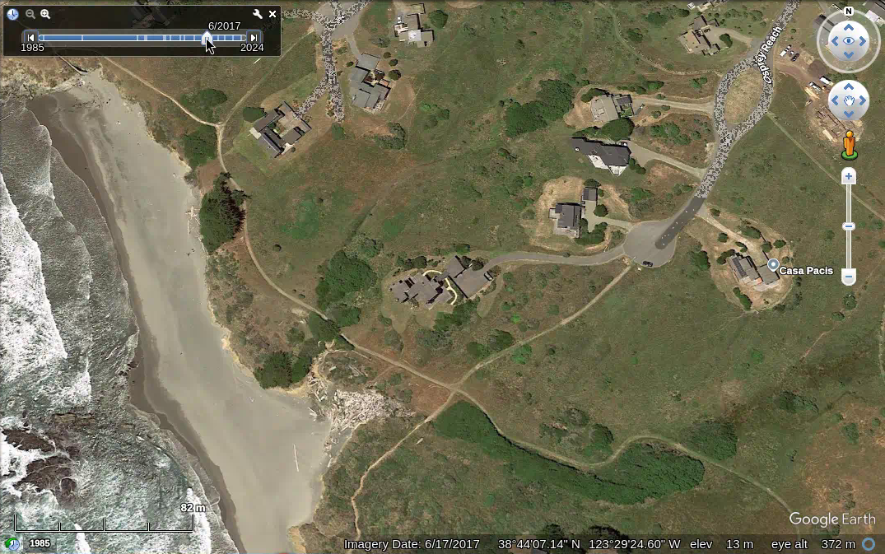
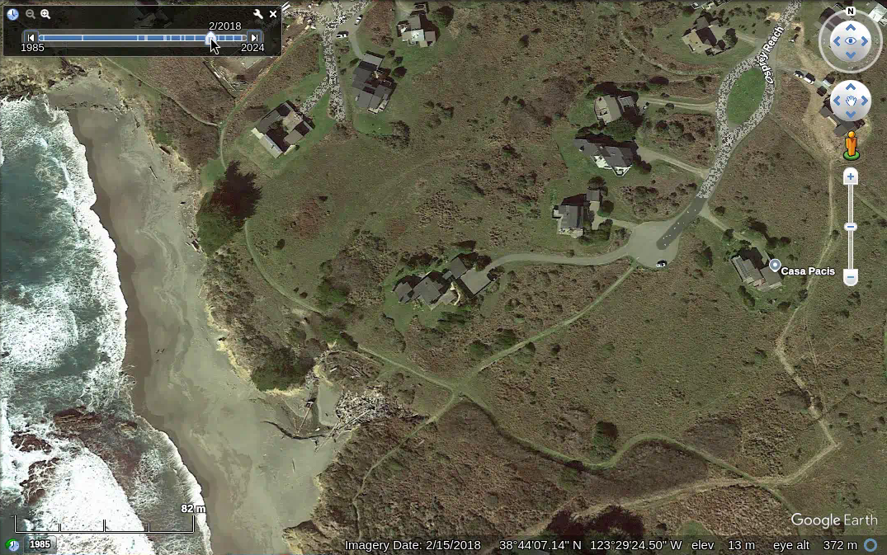
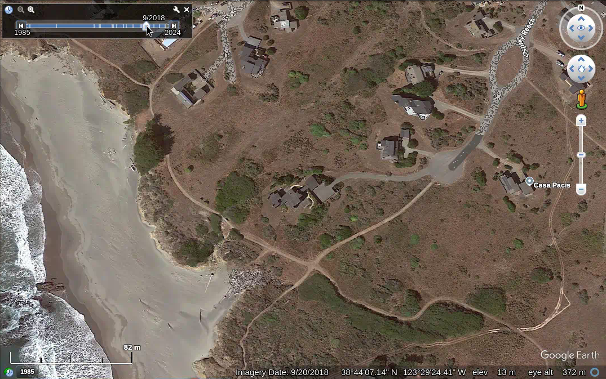
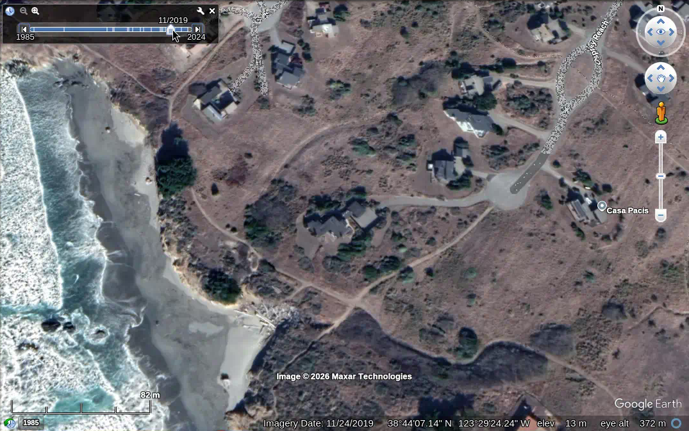
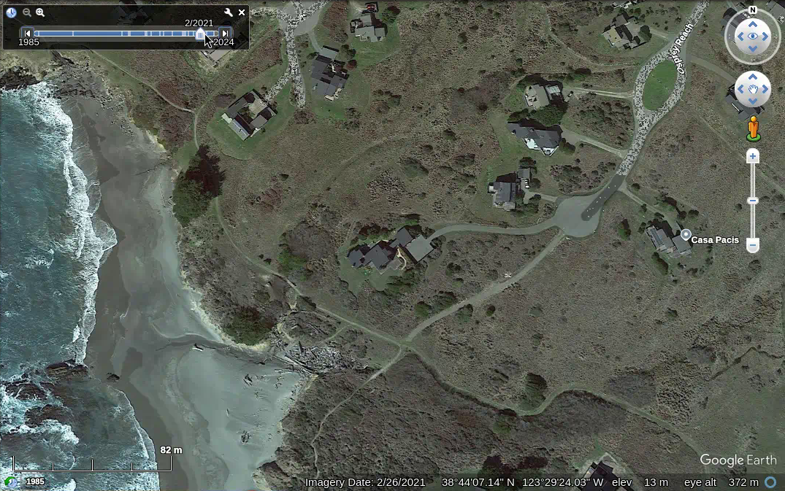
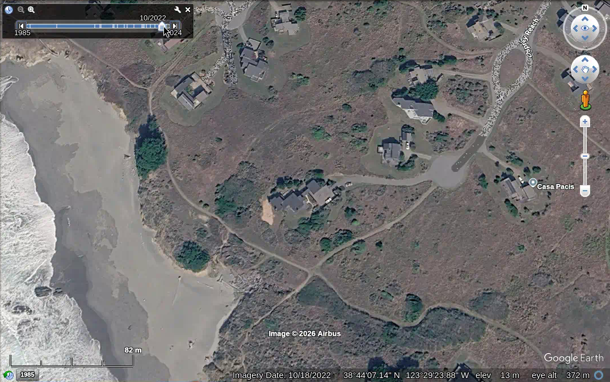
Newest tile on the Earth Pro timeline at this framing.
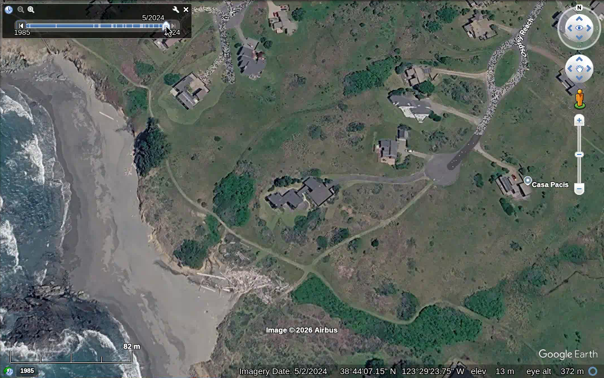